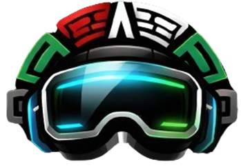
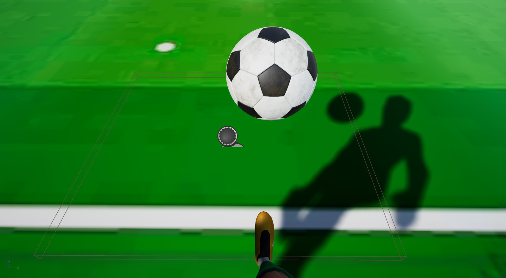
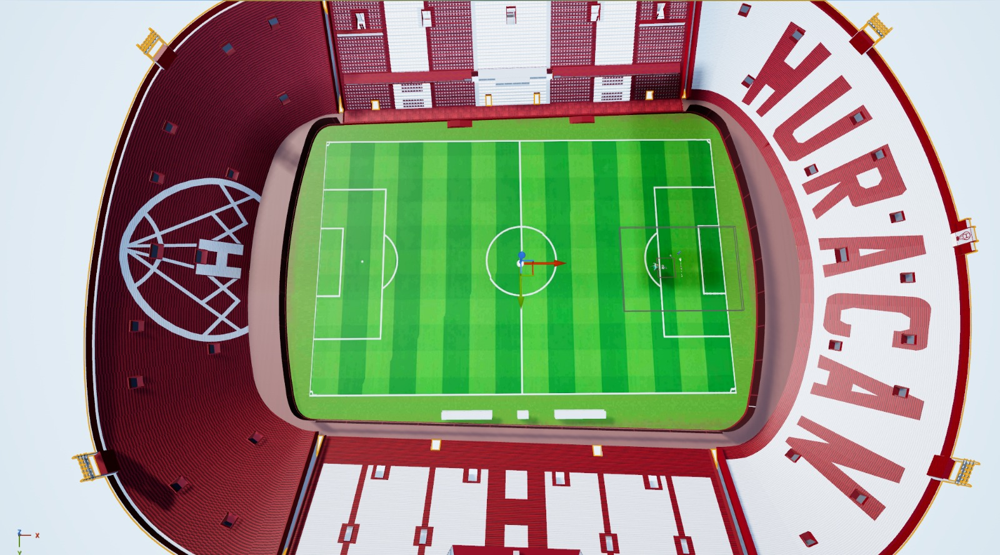
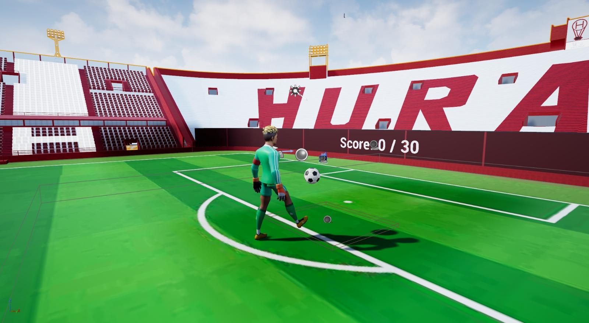

REVOLLINMejora tu coordinación, control de balón y domina la cancha en una simulación inmersiva de fútbol con respuesta háptica.
Explorar Proyecto
El nombre surge de la combinación de REV (Realidad Virtual y revolución tecnológica) y OLLIN (palabra náhuatl que significa movimiento). Diseñado bajo el contexto del Mundial de Fútbol 2026, creamos una experiencia única para la evolución del entrenamiento físico.
Desarrollar experiencias VR que ayuden a la coordinación motriz y la mejora del control corporal mediante simulaciones de fútbol.
Convertirse en la plataforma innovadora de entrenamiento deportivo integrando hardware háptico personalizado.
Visualización interactiva completa dentro de un estadio realista de Unreal Engine 5.
Ubicado en el pie del usuario para registrar giros, aceleración y la velocidad angular de cada dominada.
Dispositivo físico que proporciona retroalimentación sensorial táctil al hacer contacto con el balón virtual.

